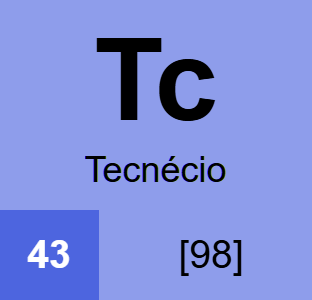
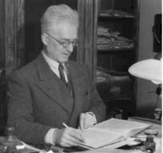
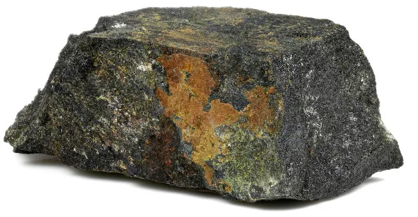

Tecnécio

| Estado físico em temperatura ambiente | Sólido |
| Coloração | cinza prata, cinza metálico |
| Número Atômico | 43 |
| Principais Propriedades | Radioativo. Não possui isótopos estáveis |
História da Descoberta
Esse elemento foi descoberto em 1937, sendo os cientistas responsáveis Carlo Perrier e Emilio Segrè:

O tecnécio ocupa o número atômico 43. Durante muito tempo, esse elemento era um dos espaços vazios da tabela. Ernest Lawrence, nos Estados Unidos, havia construído um ciclotron, equipamento que acelera partículas e bombardeia materiais com elas.
Em 1936, um pedaço de molibdênio (Mo) foi bombardeado com partículas no ciclotron. Depois, uma amostra desse molibdênio foi enviada para Emilio Segrè, na Itália.
Segrè e Carlo Perrier analisaram a amostra e perceberam que ela continha uma substância radioativa que não correspondia a nenhum elemento conhecido.
Eles concluíram que haviam produzido o elemento de número atômico 43, tornando assim, o técnecio como o primeiro elemento produzido artificialmente.
Ocorrências na Natureza
O tecnécio ocorre em quantidades extremamente pequenas na natureza. Pode ser encontrado naturalmente em alguns minérios de urânio, pois é produzido durante a desintegração radioativa do urânio. Como todos os isótopos do tecnécio são radioativos, ele se desintegra continuamente.
Em 1961, foi descoberto a presença de Tc99 em uma amostra em um mineral cheio de urânio, chamado pechblenda:

Uso no Cotidiano
Por ser um elemento radioativo e incrivelmente raro, há praticamente zero uso do tecnécio no cotidiano. O seu principal uso é na medicina nuclear, isso inclui, mas não se limita a:
- Diagnóstico de tumores
- Equipamentos médicos
- Exames de ossos (cintilografia)
- Indústria
Toxicidade e Riscos à Saúde
O principal risco do tecnécio é centrado na sua radioatividade. A exposição prolongada à radiação pode causar danos às células e aumentar o risco de problemas de saúde.
O tecnécio-99m, utilizado na medicina nuclear, possui uma meia-vida curta (cerca de 6 horas), o que permite seu uso para diagnóstico e reduz o tempo em que o paciente fica exposto à radiação.
Cuidados Necessários em sua Utilização
Por ser radioativo, o elemento deve ser manipulado por profissionais treinados, utilizando equipamentos e procedimentos específicos de proteção contra radiação. Os materiais contaminados também precisam ser armazenados e descartados adequadamente como resíduos radioativos.
Pra manipular o tecnécio, você pode usar uma capela de luvas, mantendo a amostra isolada.
Aqui acabou, pessoal!
Desenvolvedor: Pedro Pondian Neto
Docentes: Allan e Elaine